Главная идея: весь стенд — рабочий стол архитектора. Город — картонный макет, лес — войлок, туман — калька, которую посетитель стирает пальцем. Типовые коробки из OSM в этой системе выглядят не бедно, а честно: так Покровский и работал — двигал «коробки» по макету.
Игра называет годы. Вы проводите пальцем по кальке там, где, как вам кажется, строили в эти годы. Чем ближе к цели, тем теплее след под пальцем. Угадали — дома вырастают из земли и открывается карточка. Не угадали — калька мягко затягивается, архитектор подсказывает. Проиграть нельзя. В конце — ваш маршрут по настоящему городу.
Понятно за 5 секунд: на заставке кисть уже стирает кальку сама (демо-жест), крупная подпись «Проведите пальцем».
Это на пределе. Поэтому карточка на стенде короткая (название, 1 факт, QR), длинный текст — только на телефоне. Любой момент — нормальная точка выхода: открытая часть города и есть результат.
start_date из OSM, где её нет — по году этапа своей зоны. Режим «Просто посмотреть».content, с подписью «И. П.». Реальные цитаты (1976, 1996) — всегда в кавычках с датой.pointerup, не во время жеста.Один и тот же фрагмент (микрорайон, лес, пруд, ж/д, ориентир, «выросшие» дома, контуры неоткрытых) в трёх материалах. Кадры отрендерены тем же изометрическим правилом, что и SVG-ориентиры.
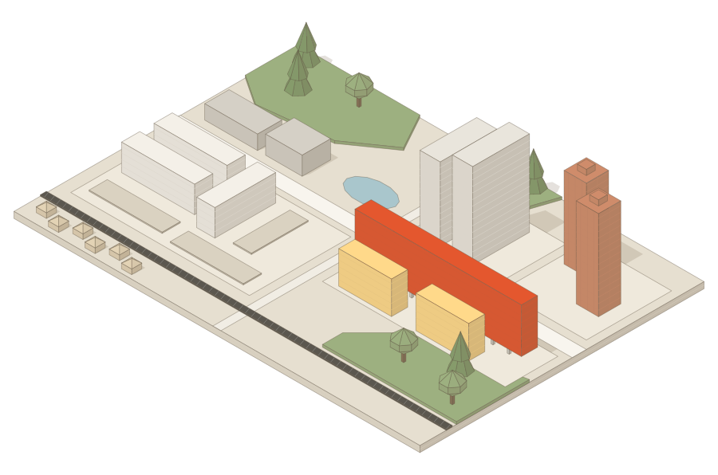
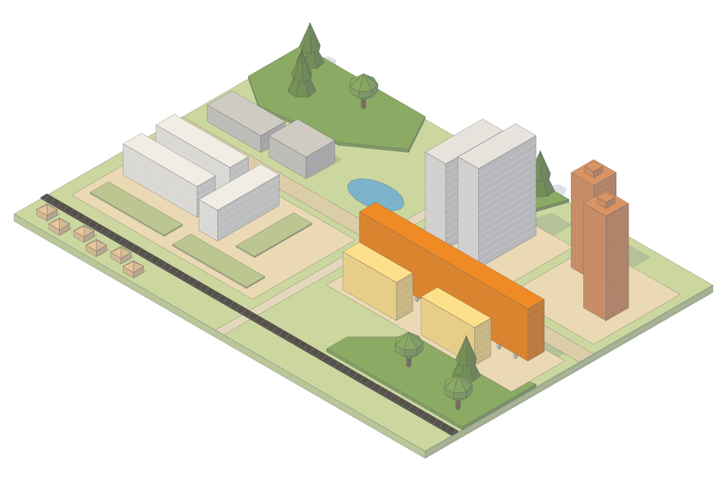
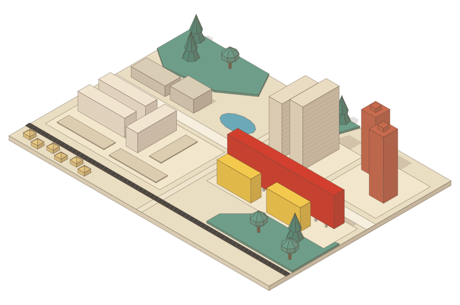
MeshLambertMaterial, flatShading: true, цвета — в sRGB.#E6DFD0#EFE9DC#9DB080#A9C6CC#F8F5EE#F1EDE4#5B574F#8A857C / 3 м#F4F0E8#E9E5DC#CF8C6B#D5D0C6#E3D3B5#E4572E#DAD2C1 · 90%#FFD98A#5E5242 · 35%#FFF4E2, 2,2; азимут 215°, высота 38°. Фасады к зрителю светлые, тени уходят вправо-вверх экрана и не закрывают передний план#FFF8EC / земля #CFC6B2, 0,9#6F604C 28% — мягкие, как под лампой#D9D2C2 с виньеткой к #CFC7B5. Край карты — срез картона 6–10 м, #D4CBB8#F6F3EC, 68% (подбирать на планшете: 0,6–0,8) — сквозь кальку читаются лес, вода, дороги, ж/д; дома под ней не рендерятся#FFD98A→#E4572E × heat#FFD98AБулавка макета: головка 50 px, игла, тень на картоне. Пин — это HTML/спрайт поверх Three.js, всегда смотрит в камеру, тач-зона 64 px.
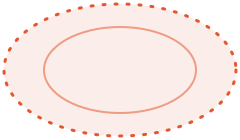
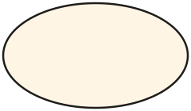
Изометрия 30°, свет и материалы как у города. Формы упрощены до уровня макета — сверить с фото перед печатью. Генератор: tools/iso-gen.js + tools/scenes.js, можно менять и перегенерировать.
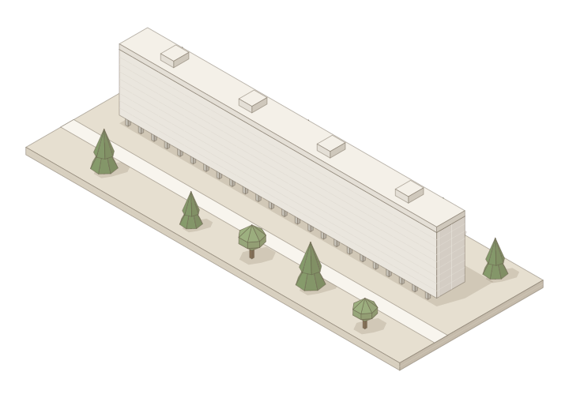
fleyta-360.svg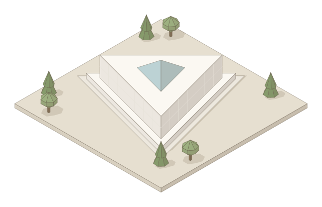
kc-zelenograd.svg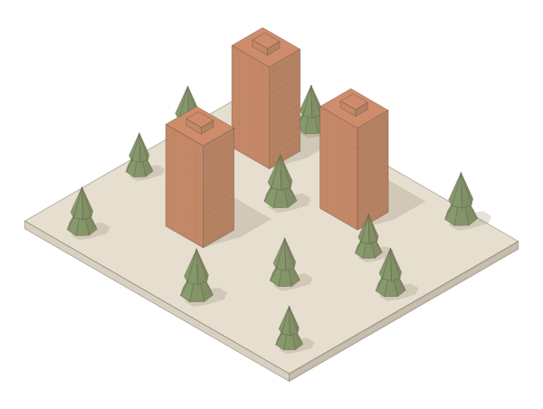
vulykh-towers.svg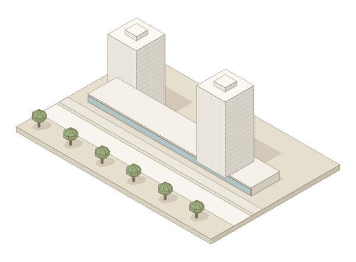
towers-central.svg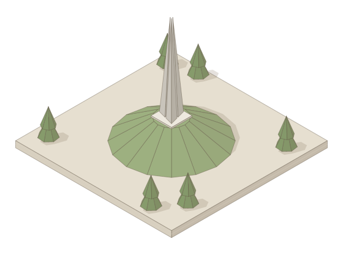
shtyki.svg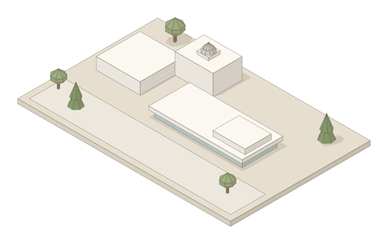
dvorets-kolumba.svg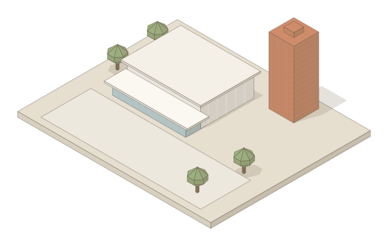
electron.svg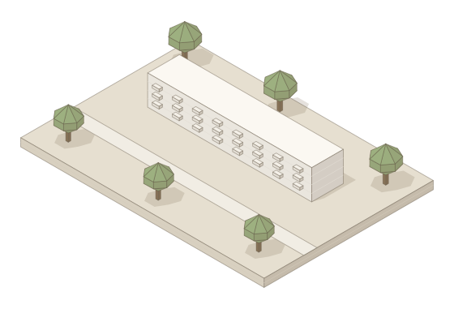
korp-118.svg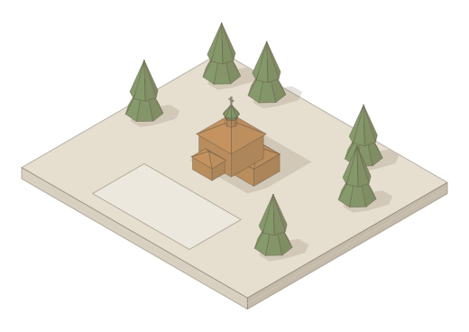
hram-sergiya.svg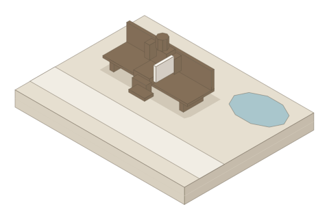
arkhitektor.svg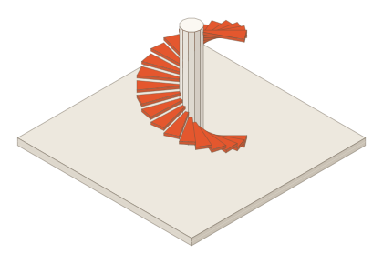
egg-pokrovskogo.svgМетры, ось X — вдоль главного фасада. Числа из objects.json отмечены ●, остальное — оценка, сверить с OSM-контуром и фото ○.
#BCD2D4 70%#D2CFC7, курган — войлок #9DB080--u; панель не шире 31%.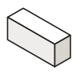
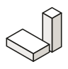
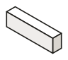
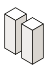
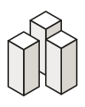
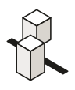
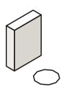